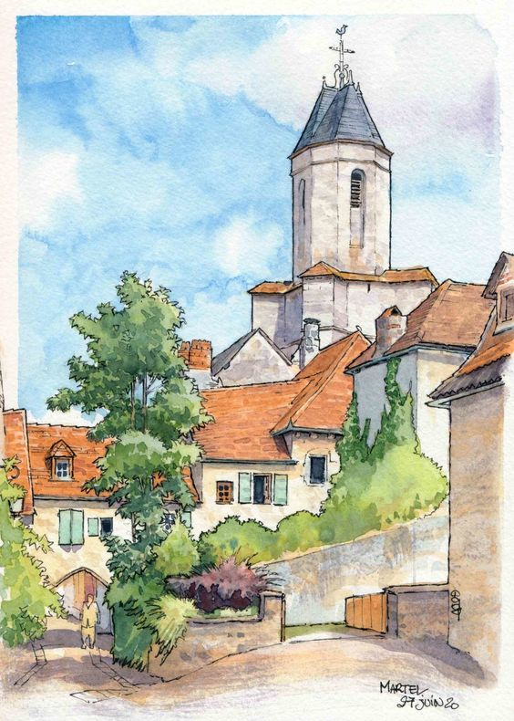
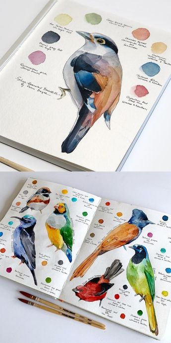
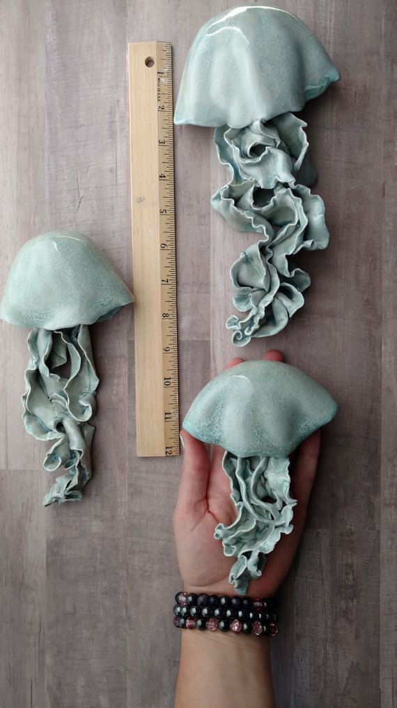
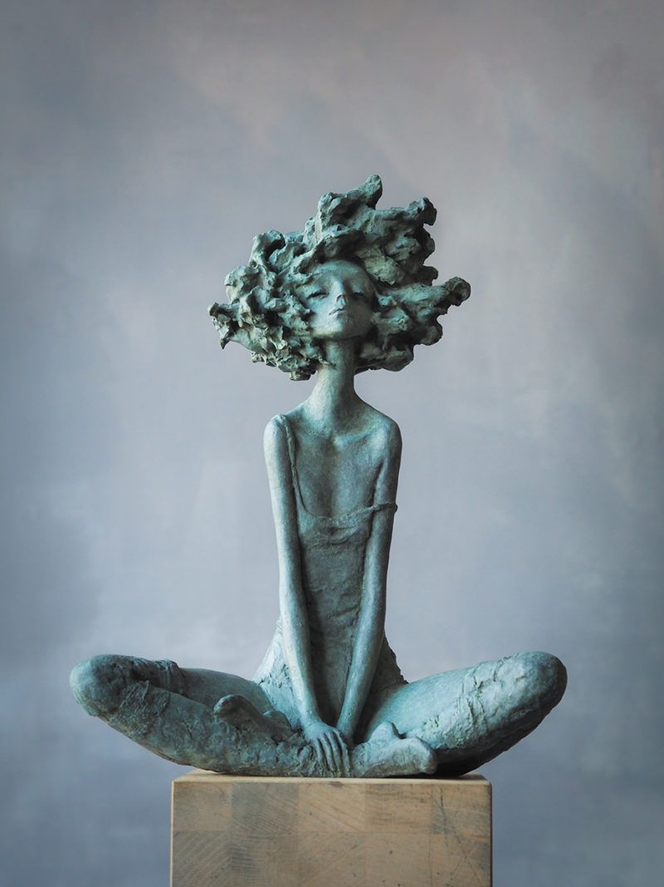
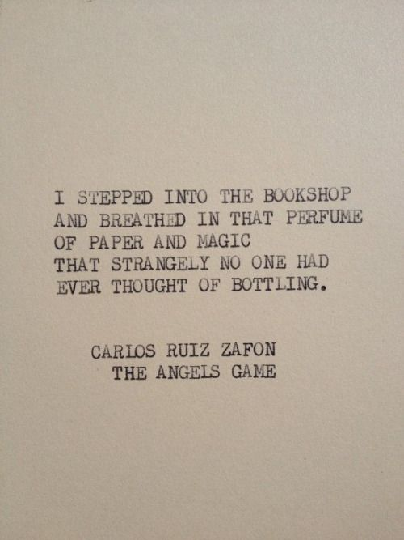
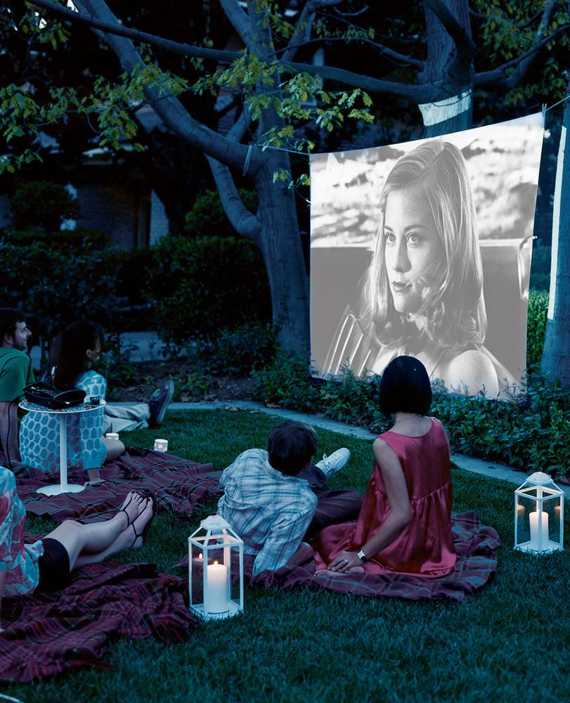
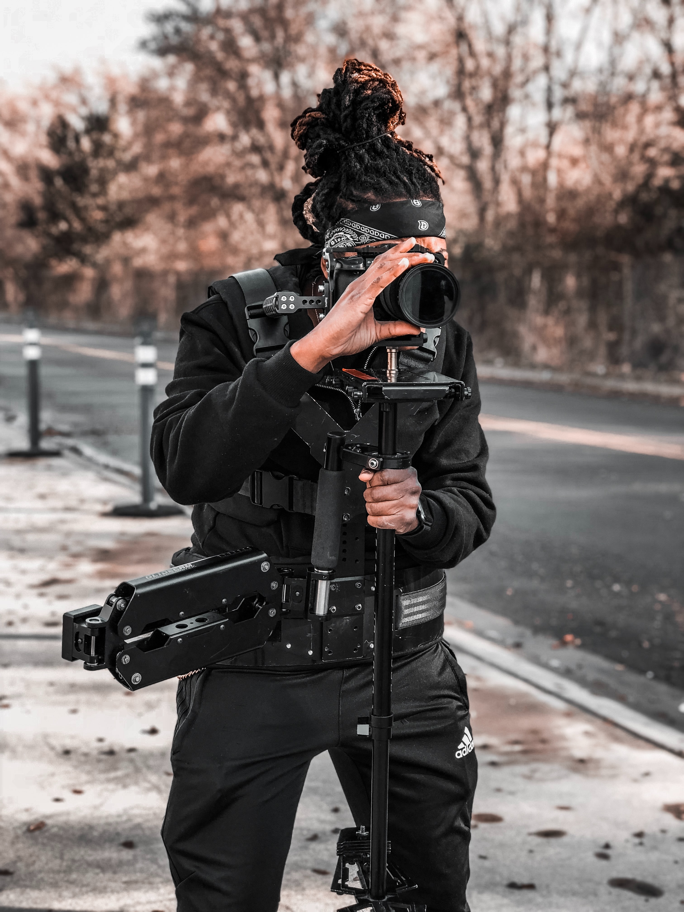
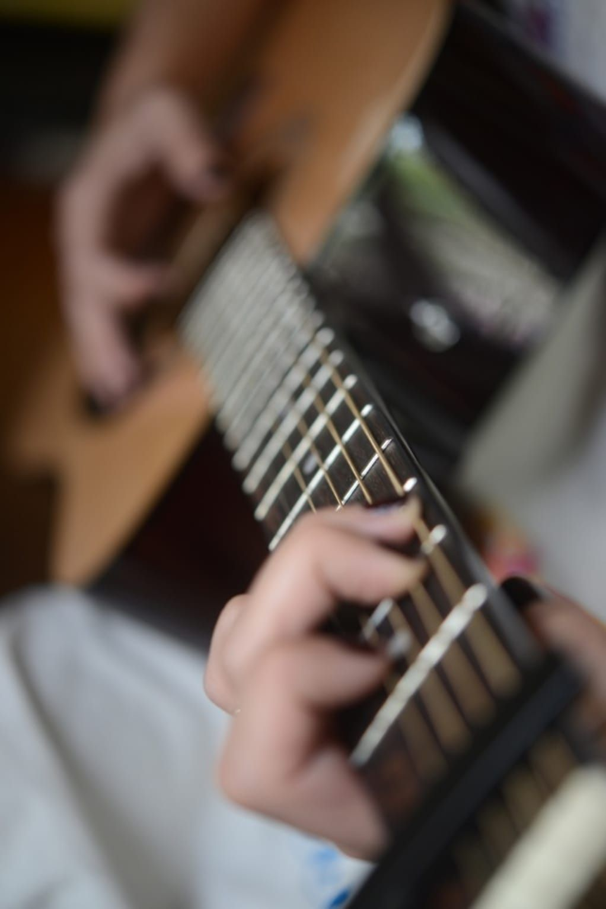

We are all creative people. You don't have to be an artist to be creative.
A lot of people use creativity on a daily basis. We use it to problem
solve, to help others, at school. It's in all of us.
Creating objects to decorate our sorroundings has motivated the creation
of many types of art, such as architecture, sculpture,
jewelry, design objects for every day use, and many others.
Here is a gallery of creativity through the eye of an artist and the different topics
we will cover in the club.
This page will cover the following list of creative topics:
We are all born painters. Painting doesn't need to be perfect. History shows that humans have always been painters. Our blood lines all consist of painters. Ancient people would decorate walls of protected caves with paint made from dirt or charcoal mixed with spit or animal fat.
 Sculpture is an artistic form of creating abtract forms out of stone, wood or clay or casting metal or plaster. Sculptures are an old form of public art all around the world. This form of creativity is shared by religion, politics, kings and queens. This type of art form is still used nowadays.
 Literature is a form of art that is expressed through writings, letters, compositions, books, etc. Through literature, we are allowed to travel through time and learn about life on Earth from the ones who walked before us. Literature is another form of creativity that allows the human mind to cultivate wisdom, take a glimpse of the past, develop critical thinking skills.

Cinema is a creative form that allows the individual to engage themselves in art through visual and audible senses. It's a way of telling a story with spoken word, visual art and more. It allows the director to inspire others to broaden their thinking and imagination. It also allows us to experience different cultures of the world.
 Music is present in all human societies across the world. It associates with religion, culture, love, emotions, seasons of life, and many more and it is expressed through the elements of rhythm, melody, harmony and color. Music can be expressed through vocal or instrumental sounds. Music is a form of art used in everyday life.
